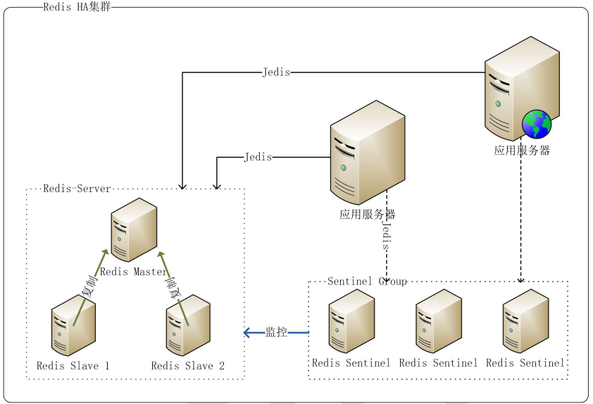
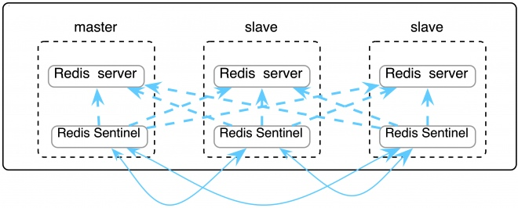

概述
HA(High Available，高可用性群集)机集群系统简称，是保证业务连续性的有效解决方案，一般有两个或两个以上的节点，且分为活动节点及备用节点。通常把正在执 行业务的称为活动节点，而作为活动节点的一个备份的则称为备用节点。当活动节点出现问题，导致正在运行的业务（任务）不能正常运行时，备用节点此时就会侦测到，并立即接续活动节点来执行业务。从而实现业务的不中断或短暂中断。
Redis 一般以主/从方式部署（这里讨论的应用从实例主要用于备份，主实例提供读写）该方式要实现 HA 主要有如下几种方案：
- keepalived： 通过 keepalived 的虚拟 IP，提供主从的统一访问，在主出现问题时， 通过 keepalived 运行脚本将从提升为主，待主恢复后先同步后自动变为主，该方案的好处是主从切换后，应用程序不需要知道(因为访问的虚拟 IP 不变)，坏处是引入 keepalived 增加部署复杂性，在有些情况下会导致数据丢失
- zookeeper： 通过 zookeeper 来监控主从实例， 维护最新有效的 IP， 应用通过 zookeeper 取得 IP，对 Redis 进行访问，该方案需要编写大量的监控代码
- sentinel： 通过 Sentinel 监控主从实例，自动进行故障恢复，该方案有个缺陷：因为主从实例地址( IP & PORT )是不同的，当故障发生进行主从切换后，应用程序无法知道新地址，故在 Jedis2.2.2 中新增了对 Sentinel 的支持，应用通过
redis.clients.jedis.JedisSentinelPool.getResource()取得的 Jedis 实例会及时更新到新的主实例地址
Sentinel方式(哨兵）
Redis-Sentinel是Redis官方推荐的高可用性(HA)解决方案。实际上这意味着你可以使用Sentinel模式创建一个可以不用人为干预而应对各种故障的Redis部署。
它的主要功能有以下几点
- 监控：Sentinel不断的检查master和slave是否正常的运行。
- 通知：如果发现某个redis节点运行出现问题，可以通过API通知系统管理员和其他的应用程序。
- 自动故障转移：能够进行自动切换。当一个master节点不可用时，能够选举出master的多个slave中的一个来作为新的master,其它的slave节点会将它所追随的master的地址改为被提升为master的slave的新地址。
- 配置提供者：哨兵作为Redis客户端发现的权威来源：客户端连接到哨兵请求当前可靠的master的地址。如果发生故障，哨兵将报告新地址。

一个健壮的部署至少需要三个哨兵实例
配置
1 | port 26379 |
快速搭建Redis Sentinel
Redis 集群可以在一组 redis 节点之间实现高可用性和 sharding。在集群中会有 1 个 master 和多个 slave 节点。当 master 节点失效时，应选举出一个 slave 节点作为新的 master。然而 Redis 本身(包括它的很多客户端)没有实现自动故障发现并进行主备切换的能力，需要外部的监控方案来实现自动故障恢复。
Redis Sentinel 是官方推荐的高可用性解决方案。它是 Redis 集群的监控管理工具，可以提供节点监控、通知、自动故障恢复和客户端配置发现服务。

搭建Redis集群
需要使用docker和docker compose，没有的请自行安装
搭建一主两从环境，docker-compose.yml 配置如下：
1 | version: '3.1' |
创建好yml文件后，当前文件夹下使用命令docker-compose up -d 启动
搭建 Sentinel 集群
我们至少需要创建三个 Sentinel 服务，docker-compose.yml 配置如下：
1 | version: '3.1' |
例如：如果我们要在/usr/local/docker/sentinel，那我们在要在此文件夹下创建sentinel1.confsentinel2.confsentinel3.conf三个配置文件，用来启动Sentinel集群。
配置文件内容请看配置
创建好yml文件和三个配置文件后，当前文件夹下使用命令docker-compose up -d 启动
验证集群是否生效
进入 Sentinel 容器，使用 Sentinel API 查看监控情况：
1 | docker exec -it redis-sentinel-1 /bin/bash |

图片参数分别为：redis从节点、其他sentinel个数、最小投票值
代码连接
因为我们使用了Redis集群，那么我们连接时，就不能连接任何其中的一个Redis服务器，而是要连接3台（n）Sentinel集群服务器，通过Sentinel服务器来操控整个Redis集群。
当我们使用数据库时，连接数据库靠的是JDBC，现在我们连接Redis是靠的Jedis/Lettuce。现在大多数使用Lettuce。
在 springboot 1.5.x版本的默认的Redis客户端是 Jedis实现的，springboot 2.x版本中默认客户端是用 lettuce实现的。
SpringBoot配置文件
1 | spring: |
依赖
1 | <dependency> |